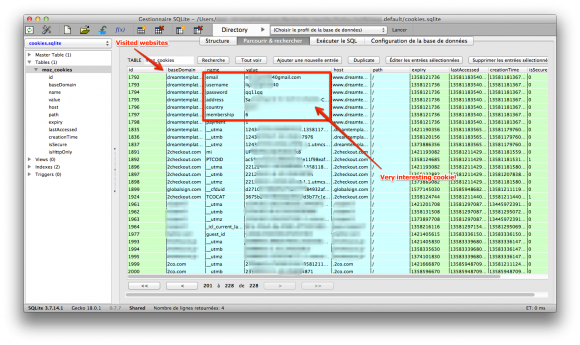
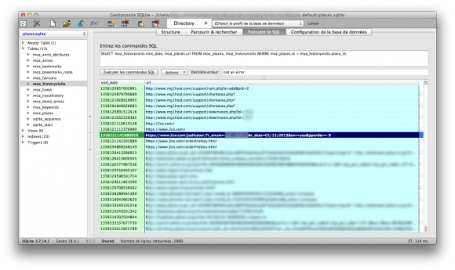

I just created a new page, Docs, that, for now, hosts two mind maps. I hope it will be useful, and please let me know any suggestion and criticism so that I can improve them.
Category Archives: News
A relative got hacked for scamming activities
One of my relative got hacked.
After a phone conversation with him, I realized that his computer was hacked a few days before. He told me that he saw the mouse moving by itself, but what happened then was not clear to him. Anyway, he did not feel the urge to call me immediately. Needless to say that his knowledge on computers is low.
I immediately started to investigate.
How the computer was hacked
The computer is running Ubuntu . I suspected a vulnerability, but I soon realized that it was much simpler than that: by mistake, a VNC session was left opened!
x11vnc with no authentication and no logging… Damned!
What the attacker did
What he tried first was to create a user to maintain access. But the scammer was probably low tech and soon abandonned.
Here is his sequence in the shell history:
261 adduser -u 0 -o -g 0 -G 0,1,2,3,4,6,10 -M xxxcx 262 useradd -d /home/xxxcx -m nokia00 263 passwd xxxcx
Command #261 failed, because of unproper syntax. I guess he meant useradd, as adduser on Debian/Ubuntu has totally different options. Note that what he was trying to do is create a new root user named xxxcx (with no home directory).
He probably did not realize his mistake, but yet tried this time useradd with fewer options in command #262. This time, he would create the home directory and name the user nokia00… Why not. Alas, the command can’t work as a standard user!
Then, command #263: he tried to change the current password, but again he failed as it is required to know it before updating it…
And that’s it. Pretty lame, isn’t it? He got quickly discouraged and started to use exclusively Firefox.
On-line shopping
With support of forensicswiki.org, I dumped the full Firefox profile on my computer and started to analyze it with the Sqlite Manager extension.
Sorry but I will be hiding private info and sensitive data that could be used for a legal action.
I got most info from the files cookies.sqlite and places.sqlite.

cookies.sqlite: a lot of info: email and billing info used by the attacker

places.sqlite: attacker’s browsing history, with interesting purchase references in GET parameters
The guy didn’t loose time, he knew precisely what he wanted and what to do.
- He first visited two websites to localize the computer: ip2location.com and ip-tracker.org. You may think that it is a strange first move, but I will come back on that later as I have a theory.
- Now that he knew in what country he was (country XXX), he started to do online shopping.
It is interesting that his online shopping was all linked to web hosting:
- templates from dreamtemplates.com
- a .net domain name (with however part of the prefix being localized accordingly to the country suffix).
- hosting at netfirms.com and mg1host.com
Note that the criminal used a online payment platform that I never heard about before: 2checkout.com aka 2co.com.
Unfortunately, when I investigated, all cookies were expired so I could not connect to the criminal’s account.
Yet, it still had some valuable info. The most interesting info I found was from a cookie from dreamtemplates.com. I got all the billing info used by the attacker:
- attacker’s gmail address (probably compromised or anonymous)
- Name and address for the billing, that sounded real…
Also, GET parameters in URLs were very interesting.
In some of them, you can guess the amount of the purchase he did. He for sure bought stuff for at least a total of 500$. But it is without counting the stuff that I cannot guess from URLs, so it is probably sensibly much more in reality.
But, even better, some had order ids. Hey, wait! Let’s have a look on the 2co website:
Hmmm… we have the email address and the order number… bingo!

Now, we have at least all info of the credit card owner, certainly the biggest victim in this mess.
Conclusion
That’s it for now. We are still in the process of transmitting the info to the police and alerting the victim.
Here are a few thoughts by the way:
- Logging, always logging! It is a pity that we know literally nothing about the scammer source ip address. All his actions were made from within a VNC session and it leaves no trace. He may have came from another proxy, but who knows… I still have a little hope that under legal request, the Internet provider of my relative will be able to provide some logs.
- Nowadays, it is still difficult to report such a case to the police and to help the victim. The local police is at loss and does not really know what to do. The cyber section is slow to answer, probably crawling under requests (mostly spam stuff?).
- Not every one has a computer specialist among friends or relatives. It must be a terrible experience to see the police coming to you for a fraud one hasn’t committed directly. Few people, even sometimes among IT professionals, understand that.
- The criminal seemed low tech, but very organized at the same time.
Here is my theory: he probably has a precise goal and is not loosing time.
He follows a process: geo-localize the victim or target a country and choose accordingly financial data in his database.
Then, he purchases stuff from a list of items he needs or he is requested.
Finally, if he could not find a way to maintain access in seconds, he leaves. Mission done: this scammer is probably doing it full time, as a professional activity. Lame but efficient for the crime industry.
- The credit card info was accompanied with private info: real name and address. We all know that but it is always shocking to think how it can easily obtained: compromised computer, hacked online shop or database, dishonest employee (e.g. at the hotel), etc.
- The websites will probably be used for more scamming and illegal activities. I am going to monitor the domain I got for a while.
Keep wired for updates.
SSTIC 2012
I came back from the 2012 edition of SSTIC, where despite the concerns, there were still some nice conferences.
Until slides and papers are published, you can find some nice reports (all in French). But the most impressive will remain the challenge: look at the solution! What a hell! Just reading and trying to understand all details in the solution is still challenging!
Big respect for the guys who have the talent of going over so many tricks.
HES 2012
It has been a long long time since my last post… I have been very busy, but hopefully I am coming back in the coming months.
Just a quick note to tell that I just come back from the Hackito Ergo Sum 2012 (HES).
And that was great. All conferences were interesting and the level was very high. We could enjoy a lot of new stuff that is going to be discussed in the community during the next months. On top of that, it was really well organized.
So far it is the conference that I enjoyed the most in France. Keep up the good work!
Acquisitions among SIEM actors
The SIEM planet has recently gone crazy. Following the acquisition of the leader, Arcsight, by HP last year, IBM just acquired Q1 Labs… and Mc Afee, Nitrosecurity !
With RSA and Norton having their own solutions, we know have 5 big players in the arena (see Gartner 2011). This is a good proof that the correlation market is growing and that the solutions are getting mature.
A link between Stuxnet and the OpenBSD IPSEC backdoor rumor ?
Found on Full Disclosure, a weired but troubling connection of two security affairs : the OpenBSD backdoor rumor and the stuxnet worm.